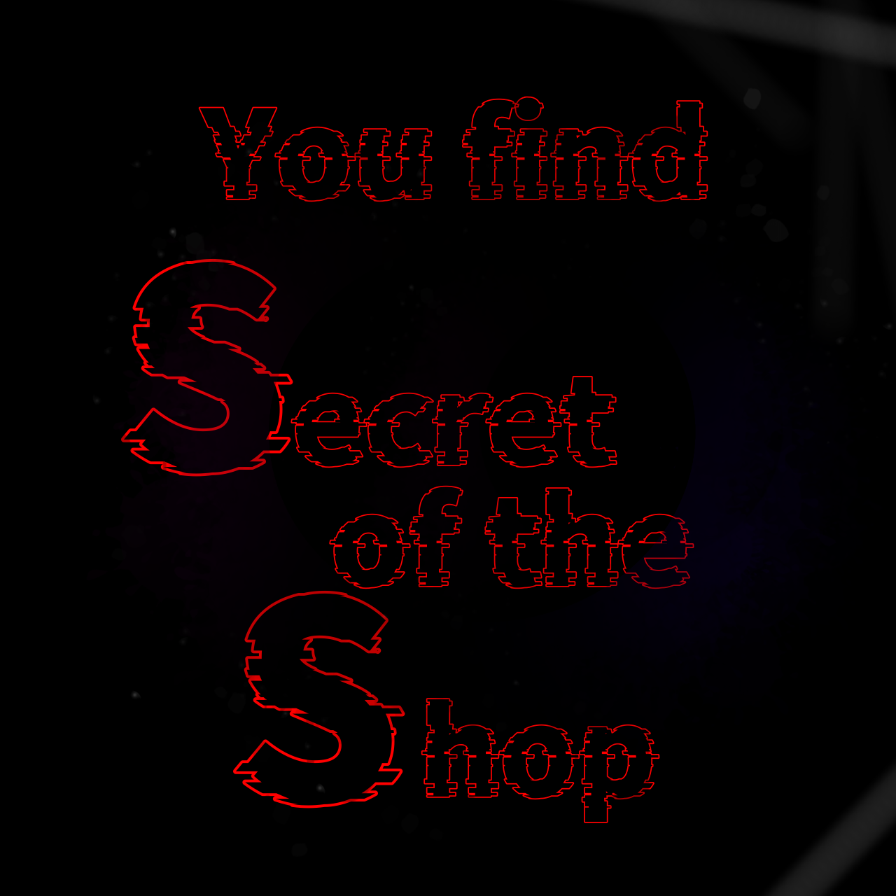

エピローグ
全てのCookieを受け入れてくれてありがとう……
オーナーはカフェに訪れた客を魔法で食べ物に変えて売り捌こうとしていたようだ。
私達はその秘密に気づいたが囚われ、クッキーにされてしまった。
私達クッキー人間が証拠として発見された以上、オーナーも観念せざるを得ないだろう。
さて……君のおかげで私も、クッキーとしての自分を受け入れた。ぜひ、召し上がってくれ！

Site Seeking を遊んでいただき、ありがとうございました。
本コンテンツはネタバレNGですが、ネタバレの無い感想は大歓迎です！よろしければ下記のリンクからポストをお願いします。
【ネタバレについての具体例】
NGワード・NG画像 クッキー(写真もNGです)
NG表現 拍子抜けだった、ギャグだった
OK画像 クリア画像
OK表現 お菓子おいしかった、簡単だった、短時間で終わった
クリアしたことをXで報告する